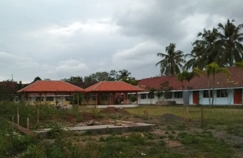

vaik web 172SMK ISLAM BUSTANUL ULUM

Profil
SMK Islam Bustanul Ulum Pakusari merupakan SMK swasta berbasis pesantren dibawah yayasan Pendidikan Islam Bustanul Ulum Jember.
SMK Islam Bustanul Ulum Pakusari berlokasi di jalan Himalaya No.17 Pakusari, Kec. Pakusari, Kab. Jember .
SMK Islam Bustanul Ulum Pakusari memakai kurikulum pendidikan nasional dan kurikulum pesantren .
Identitas Sekolah
Nama : SMKS ISLAM BUSTANUL ULUM
NPSN : 20570966
Alamat : JL. HIMALAYA NO.17 PAKUSARI
Kode Pos : 68181
Desa/Kelurahan : Pakusari
Kecamatan/Kota (LN) : Kec. Pakusari
Kab.-Kota/Negara (LN) : Kab. Jember
Propinsi/Luar Negeri (LN) : Prov. Jawa Timur
Status Sekolah : SWASTA
Waktu Penyelenggaraan : Pagi/6 hari
Jenjang Pendidikan : SMK
Naungan : Kementerian Pendidikan dan Kebudayaan
No. SK. Pendirian : 421.3/4537/413/2012
Tanggal SK. Pendirian : 2012-11-26
No. SK. Operasional : P2T/408/19.08/02/VIII/2018
Tanggal SK. Operasional : 2015-08-03
File SK Operasional : 233174-143131-367349-37574734-1751476861.pdf
Akreditasi : B
No. SK. Akreditasi :
Tanggal SK. Akreditasi : 01-01-2015
No. Sertifikasi ISO : Belum Bersertifikat
Yayasan : YPI BUSTANUL ULUM PAKUSARI
Program Keahlian
1. Pemasaran
2.Multimedia
3.Akuntansi
Fasilitas
1. Gedung Sekolah
2. Pesantren
3. Ruang Guru dan Staff
4. Laboratorium Komputer
5. UKS
6. Masjid
7. Pembelajaran dilengkapi LCD Proyektor
8. Tempat Parkir
9. Internet dan Hotspot area
10. Lapangan Serbaguna
11. Aula
12. Perpustakaan
13. Kantin
14. koperasi Sekolah
15. RPL Pemasaran
Ekstrakurikuler
1. Pencak Silat
2. Bola Volly
3. Futsal
4. Badminton
5. Basket
6. Musik
7. Pramuka
8. Marching Band
9. Kejuruan
alamat
Jalan Himalaya No.17 Pakusari, Kec. Pakusari, Kab. Jember
Kode Pos: 68181
Email: smkibupakusari1@gmail.com
Telepon: (0331) 591880